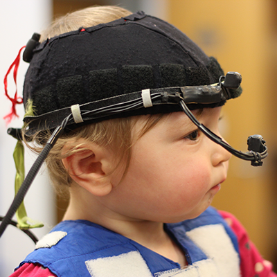
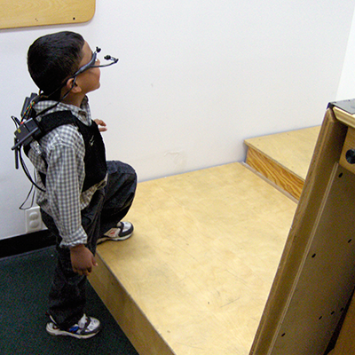
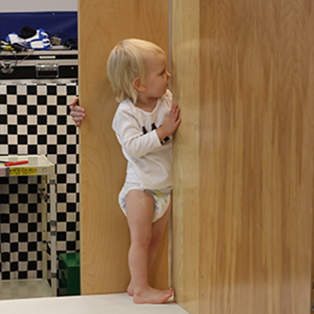

email: TBD
Olmstead 2136



The UC Riverside Perception, Action, and Development Lab studies:
- - Natural visual experiences of infants, children, and adults in everyday tasks
- - How changes in the body alter visual access to the environment
- - Visual guidance of motor skills like reaching, walking, and crawling
- - Perceptual recalibration to changing possibilities for action
2014
- Franchak, J.M. & Adolph, K.E. (2014).
Gut estimates: Pregnant women adapt to possibilities for squeezing through doorways.
Attention, Perception, & Psychophysics, 76, 460-472.
- Franchak, J.M. & Adolph, K.E. (2014).
Affordances for action as probabilistic functions: Implications for development, perception, and decision-making.
Ecological Psychology, 26, 109-124.
- Kretch, K.S., Franchak, J.M., & Adolph, K.E. (2014).
Crawling and walking infants see the world differently.
Child Development, 85, 1503-1518.
- Bambach, S., Franchak, J.M., Crandall, D.J., & Yu, C. (2014).
Detecting hands in children's egocentric views to understand embodied attention during social interaction.
Proceedings of the 36th annual meeting of the Cognitive Science Society.
- Lee, S., Bambach, S., Crandall, D.J., Franchak, J.M., & Yu, C. (2014).
This hand is your hand: A probabilistic approach to hand disambiguation in egocentric video.
Proceedings of the 2014 IEEE Conference on Computer Vision and Pattern Recognition.
- Ishak, S., Franchak, J.M., & Adolph, K.E. (2014).
Perception-action development from infants to adults: Perceiving affordances for reaching through openings.
Journal of Experimental Child Psychology, 117, 92-105.
2013
- Comalli, D.M., Franchak, J.M., Char, A., & Adolph, K.E. (2013).
Ledge and wedge: Older and younger adults' perception of possibilities for action.
Experimental Brain Research, 228, 183-192.
- Franchak, J.M., Celano, E.C., & Adolph, K.E. (2013).
Perception of passage through openings depends on the size of the body in motion.
Experimental Brain Research, 223, 301-310.
2012
- Raudies, F., Gilmore, R.O., Kretch, K.S., Franchak, J.M., & Adolph, K.E. (2012).
Understanding the development of motion processing by characterizing optic flow experienced by infants and their mothers.
Proceedings of the IEEE International Conference on Development and Learning.
- Franchak, J.M. & Adolph, K.E. (2012).
What infants know and what they do: Perceiving possibilities for walking through openings.
Developmental Psychology, 48, 1254-1261.
2010
- Franchak, J.M., van der Zalm, D.J., & Adolph, K.E. (2010).
Learning by doing: Action performance facilitates affordance perception.
Vision Research, 50, 2758-2765.
- Franchak, J.M., & Adolph, K.E. (2010).
Visually guided locomotion: Head-mounted eye-tracking of natural locomotion in children and adults.
Vision Research, 50, 2766-2774.
- Franchak, J.M., Kretch, K.S., Soska, K.C., Babcock, J.S., & Adolph, K.E. (2010).
Head-mounted eye-tracking of infants' natural interactions: A new method.
Proceedings of the 2010 Symposium on Eye Tracking Research & Applications, Austin, Texas.
2008
- Adolph, K.E., Joh, A.S., Franchak, J.M., Ishak, S., & Gill, S.V. (2018).
Flexibility in the development of action.
In J. Bargh, P. Gollwitzer, & E. Morsella (Eds.),
Oxford Handbook of Human Action, New York: Oxford University Press.